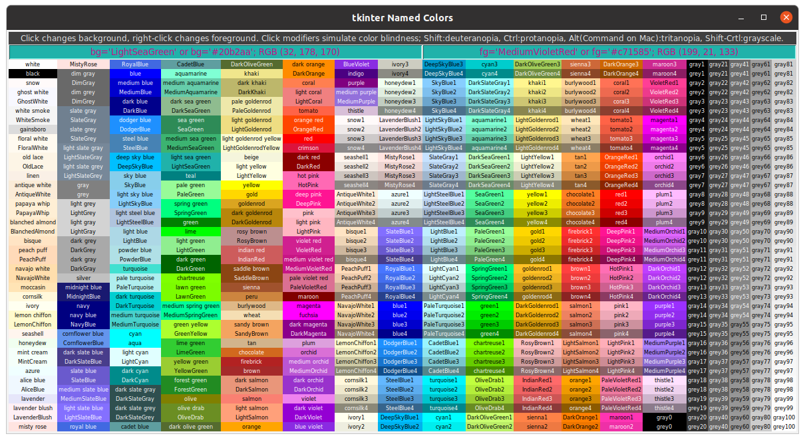
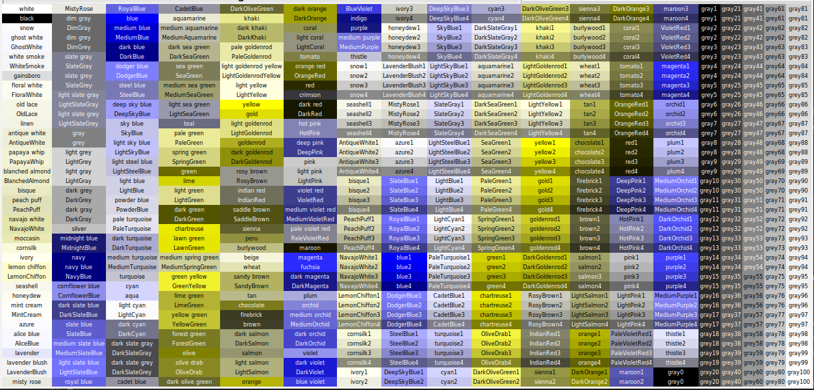
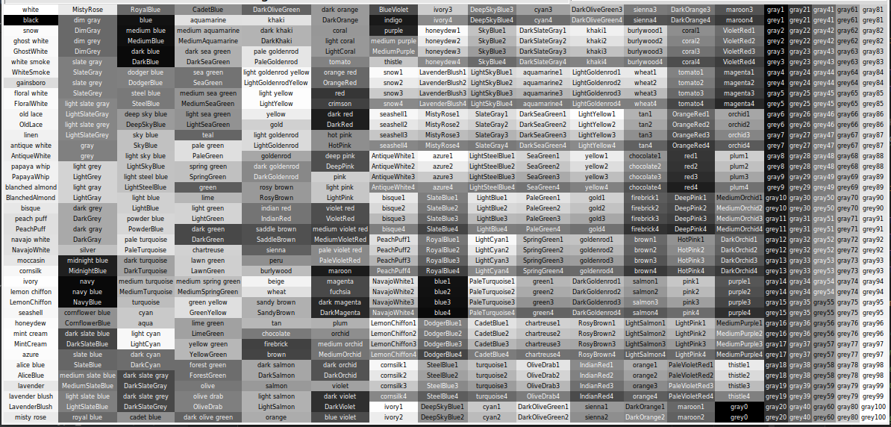

A Python utility to help choose colors and their color blind equivalents for tkinter GUIs. Draws an interactive color table for 760 color names found in X11 rgb.txt that are recognized by tkinter 8.6. Works with Linux, Windows, and MacOS. Usage: Click on a color name to show its hex code and RGB value and display that color as background. Right-click a different color to change the text foreground. Clicking on another color will retain that selected foreground. Click with a key modifier to show the color blind simulation of the selected color: Shift = deuteranopia, Ctrl = protanopia, Alt(Command) = tritanopia, Shift-Ctrl = grayscale; the foreground color will automatically match the simulation type. Simulated color hex codes and RGB values may not correspond to any named color, but the hex string will be recognized by tkinter. Using the Ctrl key (or Command in macOS) while pressing D, P, T, or G will pop-up a non-interactive color table simulated for deuteranopia, protanopia, tritanopia, or grayscale, respectively. Text in the color display and data fields can be cut, copied, pasted, or edited with standard keyboard and click commands. Runs with Python 3.6 and tkinter 8.6 or later. Color table construction based on code from https://stackoverflow.com/questions/4969543/colour-chart-for-tkinter-and-tix
From the green Code button above, download and unzip the ZIP file. From within the resulting tkinter_utilities-main folder, open a Terminal or Command Prompt and run this command:
Linux or macOS, run as
./tk-color-helperor aspython3 tk-color-helperWindows, run as
python tk-color-helper
Command line arguments --help and --about are available, e.g.,
$ ./tk-color-helper --help
usage: tk-color-helper [-h] [--about]
optional arguments:
-h, --help show this help message and exit
--about Provide description, version, GNU license
Table at startup:
Example usage: Click on LightSeaGreen to select a background...

...next, right-click MediumVioletRed to change the foreground... 
..next, Shift-click on LightSeaGreen. The background and foreground switch to the simulated colors for deuteranopia. Right-clicking on other colors will display those foreground selections with deuteranopia simulation. Shift-click on different colors to change the simulated background.

Use Ctrl-D (or Command-D on MacOS), to pop up a non-interactive deuteranopia simulation of the color table.

Use Ctrl-P (or Command-P on MacOS), to pop up a non-interactive protanopia simulation of the color table. 
Use Ctrl-T (or Command-T on MacOS), to pop up a non-interactive tritanopia simulation of the color table.

Use Ctrl-G (or Command-G on MacOS), to pop up a non-interactive grayscale simulation of the color table. 
Selection of some long color names may not fit all data into a data cell; it is there, just scroll to the right. You can also right-click and 'select all', then copy and paste the data elsewhere. All basic editing tools are available in either data display cell.